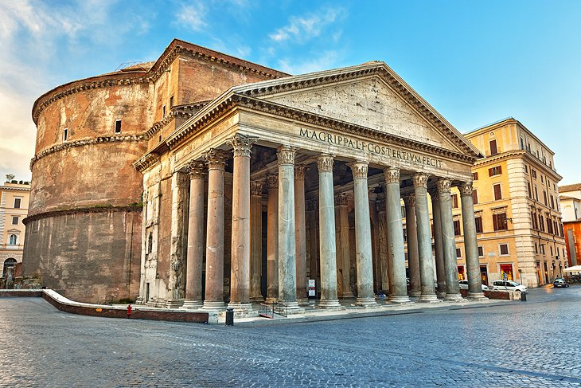
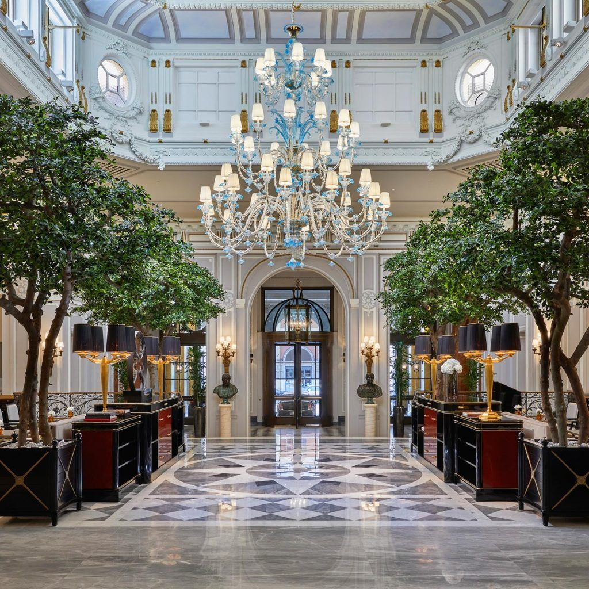

Travel to Rome!
This week's featured travel spot is Rome.
Attractions to Visit
Trevi Fountain
 The Trevi Fountain is one of the most famous fountains in the world and is the largest Baroque fountain in Rome. It showcases the god of the sea, Oceanus, and his Tritons. The fountain is near lots of shopping areas and nightlife, and there is a tradition of throwing coins into the fountain. The tradition uses three coins, each with a different purpose - one to guarantee a return to Rome, one to fall in love in Rome, and one to happily marry there. If such traditions interest you, then the Trevi Fountain will be a fun experience. Visiting the Trevi Fountain is free and won’t take long.
The Trevi Fountain is one of the most famous fountains in the world and is the largest Baroque fountain in Rome. It showcases the god of the sea, Oceanus, and his Tritons. The fountain is near lots of shopping areas and nightlife, and there is a tradition of throwing coins into the fountain. The tradition uses three coins, each with a different purpose - one to guarantee a return to Rome, one to fall in love in Rome, and one to happily marry there. If such traditions interest you, then the Trevi Fountain will be a fun experience. Visiting the Trevi Fountain is free and won’t take long.
Pantheon
The Pantheon is also a free attraction that doesn’t take much time to visit. It was formerly a temple and is now a church. Though visiting the Pantheon itself is free, it is recommended to hire a tour guide to understand the history of the Pantheon. Visitors say that the Piazza della Rotonda, the city square that the Pantheon is located in, is a cozy place to eat.
Roman Forum
 The Roman Forum contains the ruins of many of the most important structures of Ancient Rome, including government houses, shrines, and monuments. This includes buildings such as the Temple of Saturn and the Arch of Septimius Severus. Streaming an audio guide or hiring a local guide is recommended to learn about the history of the Forum. As a plus, a ticket to the Roman Forum also allows you to visit the Colosseum, which is considered one of the Seven Wonders of the World.
The Roman Forum contains the ruins of many of the most important structures of Ancient Rome, including government houses, shrines, and monuments. This includes buildings such as the Temple of Saturn and the Arch of Septimius Severus. Streaming an audio guide or hiring a local guide is recommended to learn about the history of the Forum. As a plus, a ticket to the Roman Forum also allows you to visit the Colosseum, which is considered one of the Seven Wonders of the World.
Villa Borghese
The Villa Borghese is a landscape garden that houses the Galleria Borghese, which is a villa and museum. The villa was originally commissioned by Cardinal Scipione Borghese to house his art collection and is now considered one of the premier art galleries in Rome. It has extravagant rooms, two floors, and features famous works of art, such as Caravaggio’s “David and Goliath”.
Vatican Museums and Sistine Chapel
The Vatican Museums are vast, so it is recommended to take a guided tour to learn about all of the works featured. Some of the features include the Bramante or spiral staircase and the Raphael Rooms. The Sistine Chapel is housed within the Museums, with Michelangelo’s famous frescoes on the walls and ceiling to be admired.
Food
Cafes
Sant' Eustachio Il Caffè
This cafe is near the Pantheon, a must-see attraction on this list. The Sant’ Eustachio uses fine Arabica coffees, with the beans selected and imported directly from countries like the Dominican Republic and Guatemala. The beans are blended with water from an ancient aqueduct, and the preparation method is unique - if one wants their coffee sweet, the sugar will be added through a frothy foam of espresso and sugar.
Panella
Panella bakes more than 70 different types of bread and has gluten-free products so that everyone can find something to eat. They are famous for their artisanal breads and pastries, with dough sculptures of Roman icons, such as the Colosseum. There is an outdoor seating area, with bright flowers that provide shade, creating a peaceful and relaxing atmosphere to enjoy coffee and bread. Panella also offers a decently sized dessert menu, with a variety of tarts and cakes, as well as apple strudel and baklava, to name a few.
Antico Caffè Greco
This is the oldest coffee shop in Rome and is considered a historic landmark cafe, as it opened in 1760. It’s very ornate, with marble tables and a “formal vibe”. The most remarkable thing about this cafe is that it is considered a haven for writers and artists, as many of the greats have been here, including Schopenhauer, Keats, Hans Christian Andersen, Mark Twain, Friedrich Nietzsche, and Mary Shelley. If you want to gain inspiration, The Antico Caffè Greco is the perfect place to visit.
Michelin-Star Restaurants
Le Jardin de Russie
This restaurant is located in the Hotel de Russie, so if you choose to stay there, it will be a great convenience. Not only that, but this restaurant has stylish Italian cuisine and an elegant dining room. Their outdoor dining area has a terrace with beautiful pine trees and flowering citrus, creating the perfect atmosphere for fine dining. They offer à la carte items, as well as an extensive lunch buffet. The menu offers plenty of vegetarian and vegan options, as well as meat options, so there’s something for everyone.
Mater Terrae
This restaurant provides exclusively vegetarian and vegan options, but if that’s not typically to your taste, don’t fret - the restaurant promises to “delight your palate with natural seasonal products and unique recipes”, so there is guaranteed to be something that catches your eye. The cuisine is also organic, and the restaurant prides itself on serving healthy food. Most dishes are also gluten-free, creating great accessibility for everyone. The dining areas are on stunning terraces, which overlook the domes and rooftops of the historic center of Rome, providing a great view.
Shiroya
As the name might suggest, Shiroya is a great restaurant for Japanese cuisine. They serve classics, such as miso soup, tempura, sushi, and ramen, but they place emphasis on serving home-style dishes that are authentic to Japan and may not be well-known outside of it. They also serve Italian dishes, such as ravioli, and the staff are said to be very helpful and friendly.
Where to Stay
Hotel de Russie
The Hotel de Russie has the Michelin-star restaurant Le Jardin de Russie with a garden, as well as a chic bar. The rooms are plush and have smart TVs, with mosaic and marble bathrooms. Upgraded rooms can also have sitting areas and terraces with garden or city views. Amenities include a spa with a saltwater hot tub and a sauna, as well as activities for kids.
St. Regis Rome
The St Regis Rome is 14 minutes away from the Trevi Fountain, one of the attractions on this list. The rooms are plush and full of antiques, with marble bathrooms, frescoed walls, and cable TV. Upgraded rooms have 24-hour butler services, as well as amenities such as Murano glass chandeliers, jacuzzis, and fireplaces. Other amenities include a Mediterranean restaurant filled with art, a spa, and an opulent ballroom.
Hotel San Carlo
The Hotel San Carlo is right next door to the luxury shops along Via Condotti street, as well as the gelato vendors at the Spanish Steps. The Borghese Gardens are nearby, as well as other fun attractions such as puppet shows and pony and paddleboat rides. The rooms have cherry wood furniture, flat-screen TVs, and minibars. Room service is also available, as well as balconies for some rooms.
Hotel Eden
The Hotel Eden is just two kilometers away from the Pantheon and the Colosseum, two of the attractions mentioned on this list. The rooms offer flat-screen TVs, minibars, and desks, as well as marble en suite bathrooms. Room service is available 24/7, and upgraded rooms offer terraces and bathrooms with whirlpool tubs. Amenities include a rooftop restaurant, a bar with live piano music, a gym, and a business center.
Boutique Hotel Campo De’ Fiori
This hotel is set in a baroque building and is an 8-minute walk from the Pantheon, one of the attractions on this list. The rooms are opulently decorated, with original artwork and tapestries on the walls, bright colors, and plush fabrics. There are flat-screen TVs, minibars, and room service, with terraces in some rooms. Amenities include a free breakfast buffet in an elegant dining room, a lounge with a fireplace, and a rooftop terrace with views of the city.